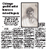
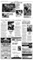
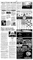

Page Design
If there is one characteristic of my page design that I would highlight, it would be my willingness to try different things.
Each one of my page layouts are distinctive because of their reliance on visual elements to better convey content.
As a visual journalist, I hope to help shape future stories with my instincts of design.
This is a small publication layout I completed for a class project. I designed everything, drafted headlines, and appropriated the text of the stories from internet sources.
This full feature page and jump page was my first full feature layout. All stories and photos are actual stories appropriated from the Knight Ridder wire. Headlines were written by me.

This feature story design is unique because of the direction I took the layout. Instead of opting for a more modular feel, I decided that a little white space would communicate the mood more effectively.

This layout was voted best inside page design at the Red & Black during that particular week of publication. I laid out all page elements and wrote all the headlines on the page.

I like this particular page because of the text box in the center. I could have taken a more traditional route with the design, but I thought the thumbnail pictures in the textbox conveyed the story best.